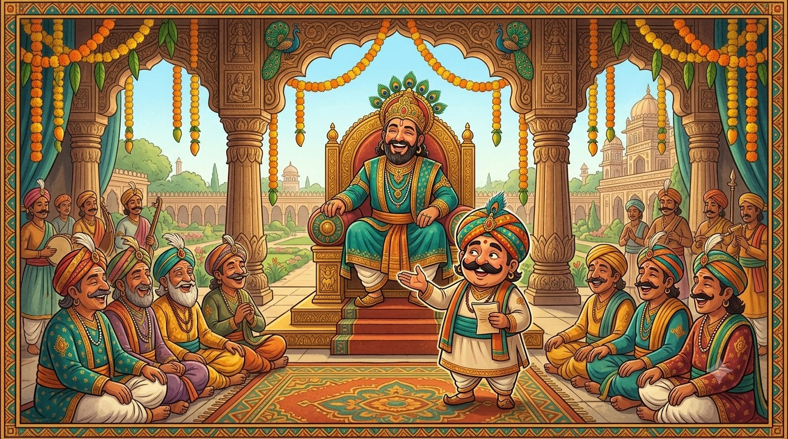

Chapter OneMeet Tenali Raman
“A sharp mind, my child, is lighter than a sword and cuts far deeper.” — what grandmothers say when they tell these tales
Long, long ago — about five hundred years ago, which is longer than your great-great-great-grandmother can remember — there lived a man whose jokes are still being told today. His name was Tenali Ramakrishna, though everybody simply calls him Tenali Raman. And here is the surprising part, little reader: he was not a made-up person at all. He was real.
Tenali Raman was a poet and a scholar in southern India, in a mighty kingdom called the Vijayanagara Empire. He lived in the sixteenth century and served at the court of a great and clever emperor named Krishnadevaraya, who ruled from the year 1509 to 1530. Say the king's name slowly — it is a grand one:
Krish-na-deva-raya and Tay-nah-lee Rah-man.
The emperor kept eight favourite poets at his court, and people called them the Ashtadiggajas — the "eight elephants" who held up the sky of learning. Tenali Raman was one of these eight. Imagine being picked as one of the eight cleverest people in a whole empire!
The jester who was also a genius
Most poets at court were very serious. They wrote long, beautiful poems and bowed a great deal. Tenali Raman could do all that too — in fact he wrote a famous long poem called Panduranga Mahatmyam, which people still count among the finest works in the Telugu language. But Tenali had a second gift that made him special: he could make the whole court laugh.
He was given a wonderful nickname — Vikatakavi, which means the "jester poet." Here is a secret about that word that Tenali himself loved: read it forwards and it says Vi-ka-ta-ka-vi; read it backwards, letter by letter, and it says the very same thing! A name that reads the same both ways, for a man whose mind worked every which way at once.

A lively, warm children's-book illustration in South-Indian folk-art style: a grand royal court hall with carved pillars and marigold garlands. On a golden throne sits a kind emperor in royal robes and crown, laughing. Below him, the cheerful court poet Tenali Raman — round face, big moustache, bright turban — stands mid-joke with a twinkle in his eye, while seven other robed court poets chuckle and cover their smiles. Rich jewel colours (peacock teal, marigold gold, oxblood red), friendly and inviting, no text baked into the image. Target size ~1280×720px, 16:9 landscape; compose with the throne and Tenali centred and safe margins — it is letterboxed into a 16:9 box, so keep nothing important near the edges.
Generate this with your image agent, then drop the file here.
Why the king kept a jester close
You might think a jester is only for fun. But the emperor kept Tenali Raman close for a cleverer reason. When a hard problem came to court — a tricky judgement, a boastful visitor, a thief no one could catch — the serious poets would frown and argue. Then Tenali would tilt his head, think of something no one else had thought of, and solve it with a joke that turned out to be exactly right.
Old stories even say he saved the kingdom from trouble more than once, simply by being quicker and braver than everybody around him. That is the magic of these tales: the hero never wins by being the strongest. He wins by being the one who thinks.
Are the stories true?
Here is an honest answer, because you are old enough for one. The man was real. But the tales that grew up around him are folk tales — stories told and re-told by parents and grandparents for five hundred years. Along the way each teller added a little spice, so you may hear the same story told two different ways. That is perfectly all right. A folk tale is like a song everybody is allowed to sing in their own voice.
Now that you have met the man, turn the page. Our first tale is the oldest one of all — the story of how a bold little boy earned the cleverest tongue in the kingdom, from a goddess with a great many faces.